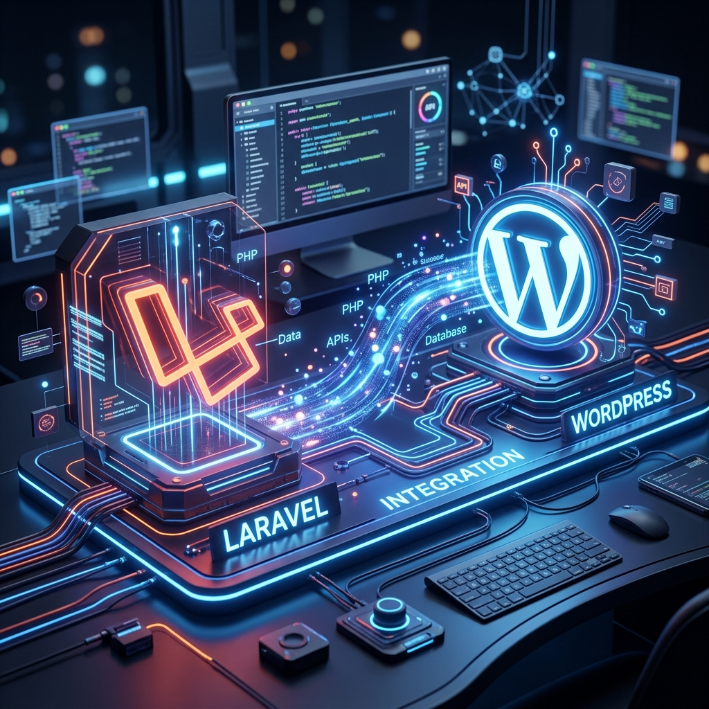

Building Agency-Grade WordPress with the Laravel DNA


A masterclass in transforming the world's most versatile CMS into a production-ready application framework using Sage, Bedrock, and Acorn.
I. The Architecture Philosophy
Standard WordPress development often leads to "Technical Debt". Manual plugin updates, business logic inside functions.php, and credentials sitting in the web root make projects fragile. For agencies building for enterprise clients, this isn't enough.
The Roots Ecosystem (specifically Bedrock and Sage) introduces the 12-factor application methodology to WordPress. We are not just building websites; we are building scalable digital products.
Why this stack?
- Dependency Reliability: Manage plugins and WP core via Composer.
- Environment Parity: Ensure your local, staging, and production environments are identical via
.env. - Developer Happiness: Use modern tools like Blade, Vite, and Tailwind CSS.
- Security: Isolate WordPress from the web root and hide sensitive configurations.
II. Environment Setup
Before executing code, your local machine needs the professional baseline. We assume a Unix-based system (macOS/Linux) or WSL2.
Prerequisites
- PHP 8.2+ — Required for Acorn 4 compatibility.
- Composer — Global installation for PHP dependencies.
- Node.js & Yarn — Essential for the Vite-powered Sage 10.
- WP-CLI — Command-line control of WordPress.
Recommendation: Use LocalWP for a GUI-driven setup, or Laravel Valet for an ultra-fast terminal workflow.
III. Implementing Bedrock
Bedrock is our project skeleton. It replaces the traditional WordPress directory structure with one that is professional and secure.
# Install Bedrock
composer create-project roots/bedrock my-project-nameKey Modifications by Bedrock
web/wp/: WordPress core is isolated here.web/app/: Equivalent towp-content..env: All database and salt configurations live here.config/: Site-wide configuration logic.
Once installed, edit your .env file:
DB_NAME='database_name'
DB_USER='database_user'
DB_PASSWORD='database_password'
WP_HOME='https://my-site.test'IV. The Sage 10 & Laravel DNA
This is where the magic happens. Sage is our starter theme, but with Acorn integrated, it becomes a mini-Laravel application. It brings the concepts of modern frontend development right into the WordPress ecosystem.
# Navigate to themes and install Sage
cd web/app/themes
composer create-project roots/sage my-theme-nameBlade Components: Higher Abstraction
Stop writing loops. Start writing components. Sage allows you to create high-reusable UI elements exactly like in Laravel. This separation of concerns is the hallmark of professional projects.
# Example Component (resources/views/components/hero.blade.php)
<section class="bg-brand py-20 text-white">
<h1>{{ $title }}</h1>
<div>{{ $slot }}</div>
</section>V. Deep Laravel Ecosystem Integration
The true power of this stack is its adoption of the Laravel Framework's core concepts. This isn't just about syntax; it's about the entire architectural ecosystem.
Service Container
The heart of dependency management. Bind your complex services to the container and resolve them anywhere in your theme via type-hinting.
Service Providers
Register your custom services, bind interfaces to implementations, and manage your custom configuration logic in a Laravel-standard way.
Acorn: The Laravel Bridge
Acorn is what boots the Laravel ecosystem. It allows you to use Dependency Injection in your View Composers, just like you would in a Laravel Controller.
# app/View/Composers/Post.php
public function __construct(protected WeatherService $weather) {}
public function with() {
return [ 'temp' => $this->weather->current() ];
}CLI Control: WP Acorn
Love php artisan? You get an equivalent with wp acorn. You can publish vendor configs, clear caches, and even generate components or providers directly from your terminal.
wp acorn make:provider AppServiceProvider
wp acorn vendor:publish --tag=acornVI. Complete Command Cheat Sheet
A quick reference for daily development tasks within the Roots ecosystem.
Development workflow
yarn dev # Starts the Vite development server
yarn build # Compiles assets for production
yarn lint # Checks your JS and CSS for errorsDependency management
composer install # Installs PHP dependencies
composer update # Safely updates all plugins/core
yarn install # Installs Node dependenciesAcorn CLI Commands
wp acorn vendor:publish # Publish config files
wp acorn cache:clear # Clear the internal cache
wp acorn make:component # Create a new Blade componentVII. Deployment & Hosting
To truly leverage this stack, your hosting must support Git/SSH and managed WP environments.
Top Picks:
Your CI/CD pipeline should run composer install --no-dev and yarn build to ensure a clean production artifact every time.
Discussion